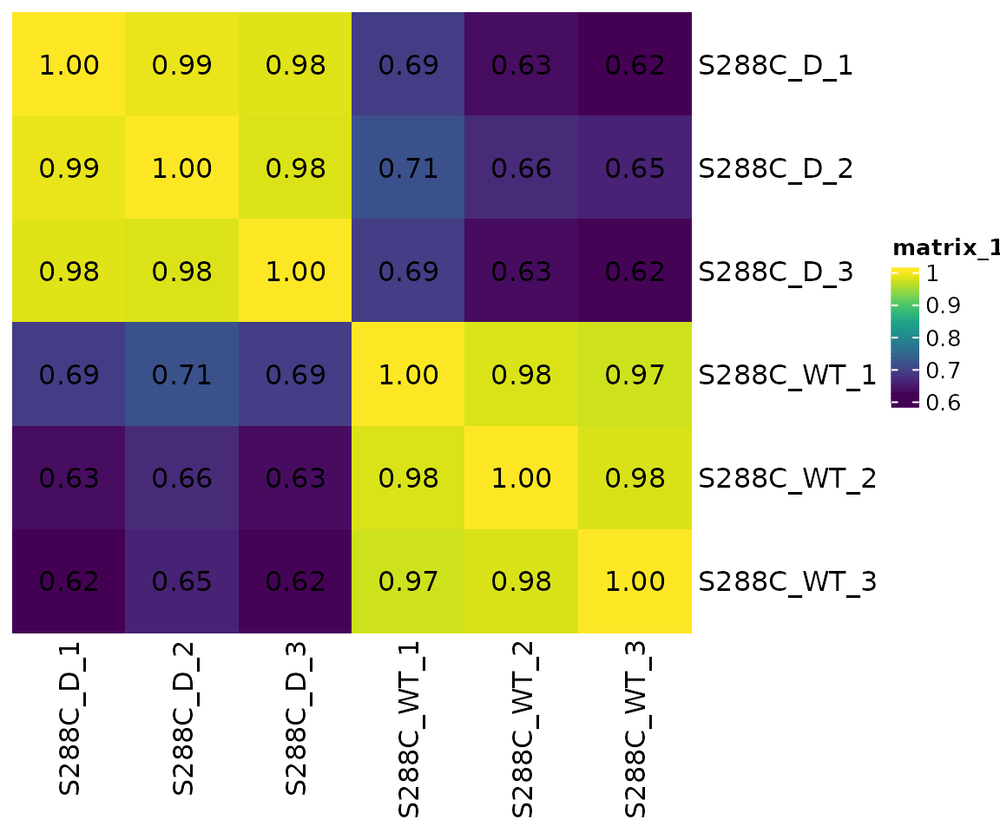
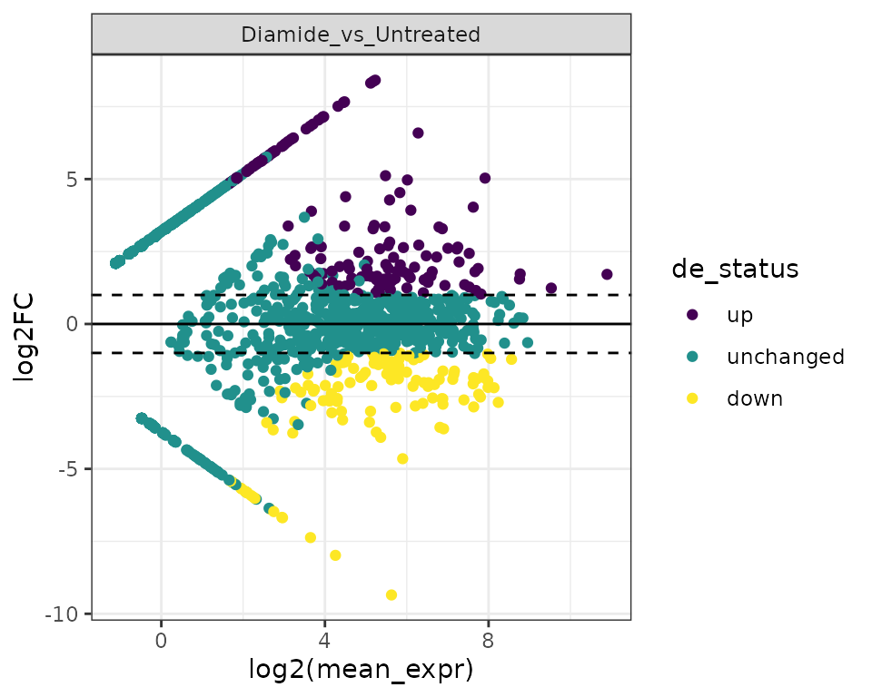
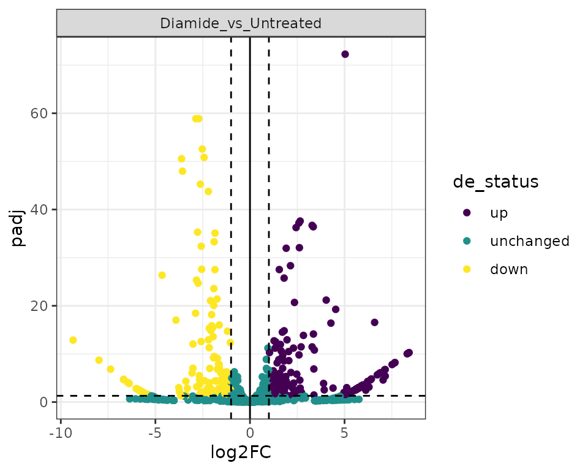
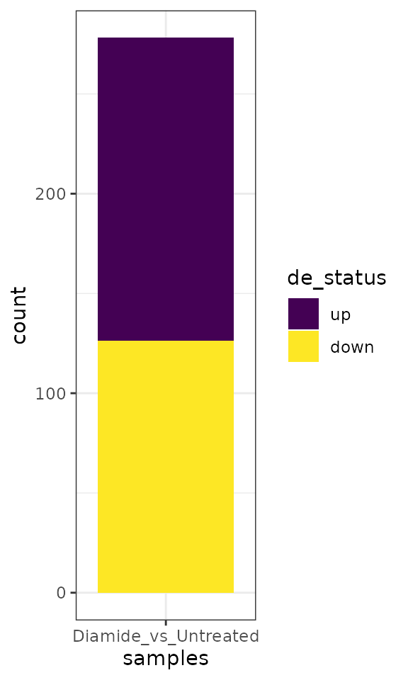
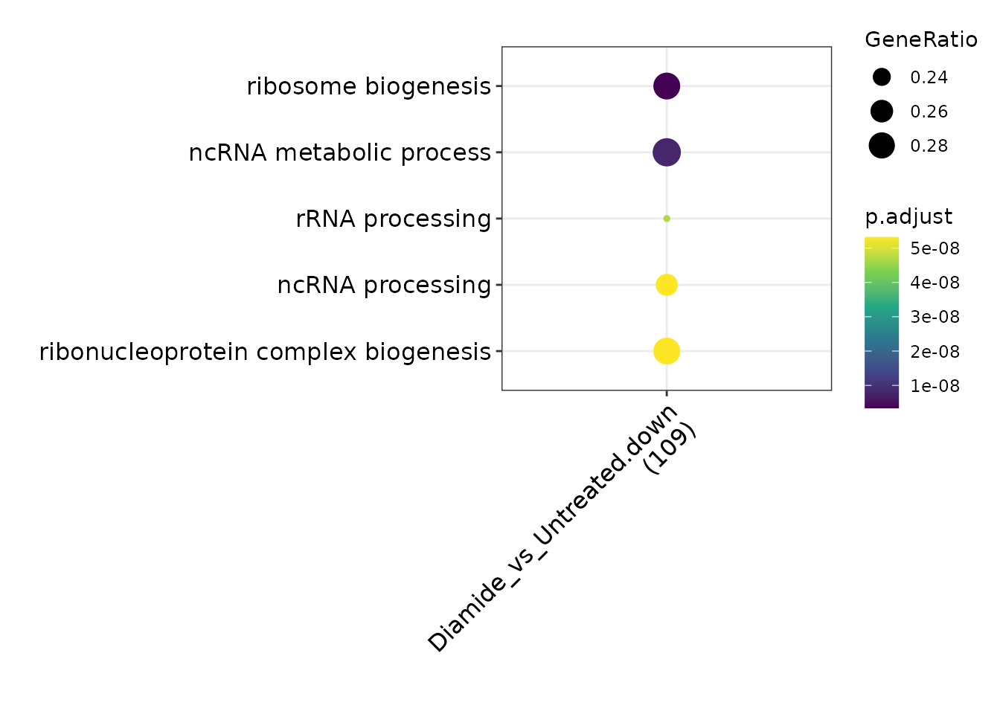
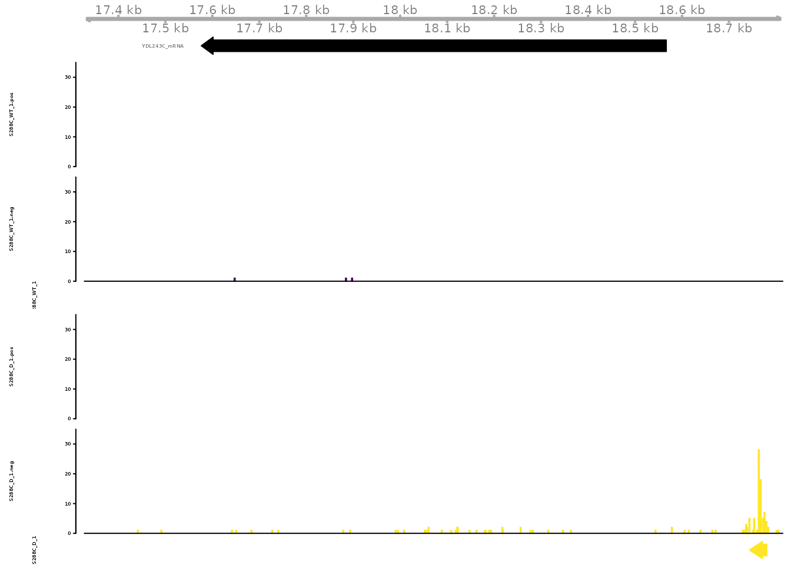

Differential Feature Analysis
DIFF_FEATURES.RmdChanges in gene transcription, driven by alterations in TSS and TSR usage, are pervasive between different environmental conditions, cell types, developmental stages, and normal and disease states. To facilitate differential TSS and TSR analysis, TSRexploreR uses DESeq2 or edgeR in an RNA-seq-like analysis, treating TSRs as “genes.”
Preparing Data
This example uses a set of STRIPE-seq-detected TSRs from S. cerevisiae cells treated with 1.5 mM diamide for 1 hour and their corresponding control cells. Diamide is an oxidizing agent that induces substantial changes in transcript levels as measured by microarray analysis (Gasch et al. 2000).
library("TSRexploreR")
library("ggplot2")
# Load example TSSs
data(TSSs)
# Load genome annotation
annotation <- system.file("extdata", "S288C_Annotation.gtf", package="TSRexploreR")
# Generate sample sheet
sample_sheet <- data.frame(
sample_name=c(sprintf("S288C_D_%s", seq_len(3)), sprintf("S288C_WT_%s", seq_len(3))),
file_1=rep(NA, 6), file_2=rep(NA, 6),
condition=c(rep("Diamide", 3), rep("Untreated", 3))
)
sample_sheet <- dplyr::mutate(
sample_sheet,
condition=forcats::fct_relevel(condition, "Untreated")
)
# Create TSRexploreR object
exp <- tsr_explorer(TSSs, sample_sheet=sample_sheet, genome_annotation=annotation)## Warning in .get_cds_IDX(mcols0$type, mcols0$phase): The "phase" metadata column contains non-NA values for features of type
## stop_codon. This information was ignored.Processing of TSSs
For expediency, only the TSS processing steps essential to differential TSR analysis are shown here. All additional steps described in the standard analysis vignette can be performed with this data, if desired.
exp <- format_counts(exp, data_type="tss") %>%
normalize_counts(data_type="tss", method="DESeq2") %>%
tss_clustering(threshold=3, max_distance=25)## Warning in .local(x, row.names, optional, ...): Arguments in '...' ignored
## Warning in .local(x, row.names, optional, ...): Arguments in '...' ignored
## Warning in .local(x, row.names, optional, ...): Arguments in '...' ignored
## Warning in .local(x, row.names, optional, ...): Arguments in '...' ignored
## Warning in .local(x, row.names, optional, ...): Arguments in '...' ignored
## Warning in .local(x, row.names, optional, ...): Arguments in '...' ignored
## Warning in .local(x, row.names, optional, ...): Arguments in '...' ignored
## Warning in .local(x, row.names, optional, ...): Arguments in '...' ignored
## Warning in .local(x, row.names, optional, ...): Arguments in '...' ignored
## Warning in .local(x, row.names, optional, ...): Arguments in '...' ignored
## Warning in .local(x, row.names, optional, ...): Arguments in '...' ignored
## Warning in .local(x, row.names, optional, ...): Arguments in '...' ignoredAnalysis of TSR similarity
Correlation Matrix
After normalizing counts and clustering TSSs into TSRs, a correlation matrix can be generated. This allows assessment of replicate similarity and gives a cursory idea of the differences between different biological conditions. As expected, biological triplicates from each condition cluster together, and there is substantially less between-group concordance, consistent with substantial differences in TSR usage.
plot_correlation(
exp, data_type="tsr", font_size=12,
use_normalized=TRUE,
heatmap_colors=viridis::viridis(100)
)
PCA
Another useful way to check differences between samples (and look at replicate concordance) is to perform principal component analysis (PCA). Here, we can see that PC1 nicely separates control and diamide-treated samples.
plot_reduction(exp, data_type="tsr", remove_var=0.25, colby="condition")
Differential TSR analysis
Discovering differential TSRs
Detection of differential TSRs is performed similarly to differential expression analysis of RNA-seq data with DESeq2 or edgeR. First, a DE model containing samples and groups is generated. In this example, we use DESeq2.
exp <- fit_de_model(exp, data_type="tsr", formula=~condition, method="DESeq2")The model can then be used to call differential TSRs.
exp <- differential_expression(
exp, data_type = "tsr",
comparison_name = "Diamide_vs_Untreated",
comparison_type = "contrast",
comparison = c("condition", "Diamide", "Untreated"))## Warning in .local(x, row.names, optional, ...): Arguments in '...' ignoredAnnotating Differential Features
The next step is to annotate the differential features.
exp <- annotate_features(exp, data_type="tsr_diff", feature_type="transcript", upstream=250, downstream=100)MA Plots
MA plots illustrate the relationship between mean expression (in this case, TSR signal) and fold change.
plot_ma(exp, data_type="tsr") +
scale_color_viridis_d() +
theme_bw()
Volcano Plots
Volcano plots illustrate the relationship between fold change and significance.
plot_volcano(exp, data_type="tsr") +
scale_color_viridis_d() +
theme_bw()## Warning: Removed 442 rows containing missing values (geom_point).
Differential feature numbers
A convenient plot to visualize the number of differential TSRs in the comparisons performed.
plot_num_de(exp, data_type="tsr", de_comparisons="Diamide_vs_Untreated") +
scale_fill_viridis_d() +
theme_bw()
Gene Ontology
To functionally annotate changes in TSR usage, GO analysis can be performed. TSRexploreR exports annotated differential TSRs ready for GO analysis with clusterProfiler, the package of choice for GO analysis in R. In this example, we export significantly altered TSRs with an annotation of “promoter,” specified above as positions -250 to 100 relative to an annotated gene start. By default, a log2(fold change) cutoff of 1 and an FDR cutoff of 0.05 are enforced. While due to the small size of this example dataset there are no significantly enriched biological process terms, downregulated TSRs are highly associated with genes involved in ribosome biogenesis. This is consistent with the previously reported downregulation of such genes in response to diamide (Gasch et al. 2000, Weiner and Chen et al. 2012)
# Export differential promoter TSRs
enrichment_data <- export_for_enrichment(exp, data_type="tsr", anno_categories="Promoter", keep_unchanged=FALSE)
# Perform GO analysis
library("clusterProfiler")
library("org.Sc.sgd.db")
go_enrichment <- compareCluster(
geneId ~ sample + de_status,
data=enrichment_data,
fun="enrichGO",
OrgDb="org.Sc.sgd.db",
pAdjustMethod="fdr",
ont="BP",
keyType="ENSEMBL"
)
# Plot compareCluster results
dotplot(go_enrichment) +
scale_color_viridis_c() +
theme(axis.text.x=element_text(angle=45, hjust=1))
Gene Tracks
Individual examples of differential TSR usage can be viewed as signal tracks. Here, we visualize signal at YDL243/AAD4, encoding an alcohol dehydrogenase involved in the oxidative stress response.
gene_tracks(
exp, feature_name="YDL243C",
samples=c(
TSS="S288C_WT_1", TSR="S288C_WT_1",
TSS="S288C_D_1", TSR="S288C_D_1"
), ymax=35,
tss_colors=viridis::viridis(2),
tsr_colors=viridis::viridis(2)
)